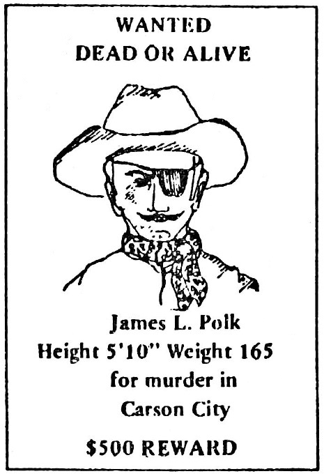

PART TWO
HOW CHARACTERS ARE REVEALED
Preview Quiz 3
As a preview to what will be discussed in Part Two, try to answer this question:
What do you think is the most difficult task for the writer of fiction?
Begin reading Part Two to discover the correct answer.
In this section the methods of revealing character will be discussed. You have already learned that characters can be human, animal, or inanimate. Now you will discover how writers make characters seem real and very much alive no matter what form they may take.
Perhaps the most difficult task for the writer of fiction is to make his characters live. He must create the illusion that his people really exist and that they experience all the conflicts, large and small, that are part of real life. Their personalities must be convincing or else the reader quickly loses interest. For these reasons, good writers develop their characters with care, employing some or all of the methods we will discuss next.
The Character's Appearance
To illustrate the first method of revealing character, look at this typical "wanted" poster from the Old West.
The poster does not give much information, does it? The scanty description, however accurate, does not show the wanted man's personality.
In other words, physical appearance alone does not reveal the whole person, but is an important part of character.
Sometimes a character is described all at once in a paragraph or two at the beginning, but more often glimpses of physical description are spread throughout a story.
We want to know what a character looks like in order to "see" him. When we can see him, we realize that he is more than just lifeless words on a page.
You may have noticed that whenever you meet someone new, his physical appearance first strikes you; his personality only becomes known after you hear him speak and see him act. The following paragraph creates a first impression:
He was tall and well-built with the wide-shouldered look of an athlete. The snug fit of his dark suit revealed a muscular build.
This man's physical appearance may give rise to any of the following questions: Is he a business man on his way to his health club, a prize fighter on his way to sign an important contract, or is he a recently discharged U.S. Marine? Our knowledge at this point is incomplete. If his speech and actions were reported, we would know more about the man. The passage on page 16 adds speech and action to physical description.
Preview Quiz 4
As a preview to what will be discussed next, try to answer this question:
Besides physical appearance, what else do writers tell about to help us understand characters?
Continue reading to discover the correct answer.
His arms swung to the rhythm of his wide gait, and a faint smile played across his lips. He glanced at his watch, thought for a moment, and quickened his pace.
Finally, he reached a black limousine and said, "Saint James Square, the Roosevelt Inn."
Once settled inside the plush vehicle, he thought to himself, "Myra would never forgive me if I forgot our tenth anniversary."
Now actions, speech, and thoughts help to reveal the character as a person with direction and purpose. We know him a little better: He has concern for others, likes to be on time, dresses smartly, has been married for ten years, owns or can afford to hire a black limousine, is expected at an anniversary dinner, and so on.
Sometimes we meet a very interesting character in fiction whose appearance instantly arouses our curiosity. The description of the character in the following sketch is one such example:
In the corner by the large rubber tree, sat Mrs. Hugh Van Esmond, glittering with jewels. The jewels she wore on her fingers, wrists, ears, and across the top of her pink brocaded gown caught and reflected the light in the room. Pink fingernails were spread wide on each side of her lap. And her large, bright eyes shot through the guests who stood in small intimate groups on the dance floor.
Too many questions remain unanswered if we leave Mrs. Van Esmond at this point. She is well described, but something is missing. We need to know more. A single movement, a spoken word, a fleeting thought would help reveal more of her personality. Notice how much more developed her character becomes at the end of the description which follows:
Her eyes narrowed but still retained their sharp glare. She struck her cane several short, hard raps against the chair and waited. The merrymakers stopped their chatter and turned to the corner where their hostess sat composed in her wheelchair.
"I am very pleased that you have found much to discuss and that you have made friends with each other. Enjoy yourselves, one and all," she said between her teeth as she made a sweeping motion with her gold-headed cane. "Enjoy yourselves, because before the evening draws to a close, one of you will die!"
We are hooked. We have met someone who has murder in mind. Now our curiosity is stirred even further and we want to know more.
The Character's Actions
The second method of character revelation makes use of the character's actions. The saying, "Men express their souls in their actions" is very true because people are action of one form or another. That is, we are always involved in some activity, even if it is just breathing.
Preview Quiz 5
As a preview to what will be discussed next, try to answer this question:
What especially makes a character on the printed page come to life?
Continue reading to discover the correct answer.
From the most subtle movement of a hand to the most violent actions of the whole body, character is revealed. The inner turmoil of Mrs. Maguire in a story called "The Fur Coat" is made clear in one sentence:
And she crashed out and banged the door after her and put the children to bed as if she were throwing sacks of flour into the cellar.
Actions tell the story. They reveal a woman who is obviously very upset and possibly a menace to others.
Compare the frantic pace of Mrs. Maguire to the almost complete lack of action in the following paragraph:
George rested his weary body against the stump of a spruce, and Horace thought how great it would be if he and George could always be together. They could finish the lumber mill in time to receive the new trees, and working together, sweating together, they could turn it into a good business.
Horace started to speak, but only the usual squeaking sounds came out: "Cool here, ain't it, George?"
"Yeah", George responded, lost in thought, searching sky and treetops. But that one word spoken with sureness and strength, made Horace glow with joy. He was safe with George.
"You're a good brother, George." And Horace gazed into the blue sky and pine tops, too.
The two brothers are enjoying a quiet moment. Although the action is limited, real people emerge. Horace, it seems, suffers from an inferiority complex; he has great plans for the future, but lacks personal confidence. He depends on his brother George who is presented as a strong, patient, and hard-working person.
The speech of George and Horace reveals much about them, and this leads us to the third method of character revelation.
The Character's Speech
Next to actions, speech reveals more about a character than anything else.
Conversation between characters is called dialogue, Through dialogue we learn many of a character's attitudes: his likes and dislikes, his background, his moods, his needs, his level of education, and so on. Each spoken word adds another stroke of color to the portrait and advances the story one step further. Think of dialogue as the fingerprint of personality. Every time we speak, we give ourselves away by revealing more of our inner personalities. The same holds true for characters in fiction.
Think back for a moment to the conversation between George and Horace. What the brothers said and how they said it is revealing. They are obviously very different—Horace is a talker; he depends on his brother for friendship, support and direction and appears to be mentally retarded. On the other hand, George is a listener and gives the impression that he is the strong, reliable, silent type.
Preview Quiz 6
As a preview to what will be discussed next, try to answer this question:
Quiet characters also have personalities. How are they revealed to the reader?
Continue reading to discover the correct answer.
The basis for all action and speech is thought. Man is a thinking being. Much of our time each day is spent thinking, and sometimes we become so lost in thought that we are unaware of our surroundings. Characters in fiction may become lost in thought, as George was, or they may think aloud to reveal important information about themselves and others. Revealing personality through the character's thoughts is another method of character revelation.
The Character's Thoughts
A good example of this technique is found in "Wild Plums", a short story by Jesse Stuart. Jason, the main character, expresses his thoughts aloud and reveals much about himself in the process.
This is a great time to be out, thinks Jason. No wonder the students don't want to be in school today. I can see why they want to skip away from the four walls of a house that encloses them and their dreams. Here I am, a man, acting like a small boy. I am playing hooky, too.
From Jason's thoughts, we learn that he feels embarrassed and possibly guilty about being out and away from his work. He does not say it but we can read between the lines. He says "playing hooky", which implies some guilt. "Acting like a small boy" reinforces this impression.
There are many levels of comprehension and it is important always to read between the lines for complete meaning, Try it with all the methods of character revelation and you will understand characters better.
The Thoughts and Comments of Other Characters
This method, in the hands of a skillful writer, contributes importantly to character revelation because in fiction, as in real life, people have a tendency to talk about others who are absent.
The following conversation between two people concerns a third person, not present:
Margo drove in her usual reckless manner as she complained to Paul.
"A cheerleader, a captain no less. Even honor society ... in the top ten percent of her class!"
"What does that have to do with anything? You don't have to be brainless and unpopular to be a shoplifter," Paul said as he lit another cigarette.
"I know that," Margo said. "But why my sister after the kind of upbringing she's had."
"Just goes to show you can't judge a crook by his cover."
"Can't you ever be serious?" Margo pleaded.
"Only if you smarten up and stop paying for everything she takes. Stores will accept your payments and keep quiet about it for only so long. It's about time your sister started acting responsible."
"I suppose you're right as usual. Janice has got to face up to it sooner or later," Margo said as she swerved to miss a truck.
Preview Quiz 7
As a preview to what will be discussed next, try to answer this question:
What is the most remark able feature revealed about Janice in the conversation you just read?
Continue reading to discover the correct answer.
Notice that Janice's name is not mentioned until the last line of the conversation, yet the reader knows several things about her. Facts have emerged from the conversation of two other people: Janice is in the top ten percent of her class, a member of the honor society, the captain of her cheer-leading squad, and, most important of all, a shoplifter.
While Janice's personality is being revealed, Margo and Paul's characters also take shape: Margo is a terrible driver, but she is a thoughtful, loving sister. She shows maturity by heeding Paul's advice about letting Janice face up to the consequences of her actions. Paul, while he likes to joke, is capable of offering sound and realistic advice.
Having read and thought about this and the other ways that characters can be revealed in fiction, you should have a clearer understanding of the subject. Try to apply this knowledge to the sample exercise in Part Three. Put your new understanding of characters to work.